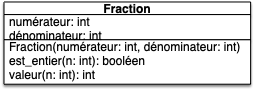
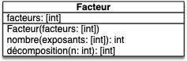
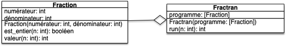

sujet Test 6 : Le retour de la programmation orientée objet (et elle est pas contente)
- Vous avez 30min pour faire le test.
- Vous pouvez pair-programmer (si vous le faites, ajoutez un fichier
participant.txtqui contient les noms et prénoms des participants)
Rendu
On vous rappelle que toute fonction (hors du programme principal) doit être testée.
Type de rendu
Vous devrez rendre le dossier d'un projet vscode (vous pouvez le compresser si nécessaire). Commencez donc par créer un projet dans un dossier que vous appellerez la-POO-C-bo.
Éléments de notation
- 3 fichiers dans un projet :
- le programme principal
main.py, - les fonctions utilisées
fractran.py, - les tests des fonctions
test_fractran.py.
- le programme principal
- Du joli code : le code doit être passé par black.
- Bons noms :
- de fichiers,
- de variables.
- Tests unitaires : toute fonction doit être testée.
Sujet
But
Le but du sujet est de construire un ordinateur !
On utilisera pour cela le FRACTRAN qui est un langage de programmation inventé par John Conway (à qui l'on doit aussi le célèbre jeu de la vie). Nous allons y aller pas à pas, il suffit de suivre les différentes étapes.
Fractions
On va commencer par coder une classe Fraction dont le diagramme UML est :

- La méthode
Fraction.est_entier(n)rend un booléen qui est :Vraisi le dénominateur de la fraction divisenFauxsi le dénominateur de la fraction ne divise pasn
- La méthode
Fraction.valeur(n)rend l'entier résultant de la multiplication du numérateur et de la division entière entrenet le dénominateur
Les tests suivant explicitent ce fonctionnement :
from fractran import Fraction
def test_Fraction_init():
assert Fraction(1, 2).numérateur == 1
assert Fraction(1, 2).dénominateur == 2
def test_Fraction_est_entier():
assert Fraction(1, 2).est_entier(2)
assert not Fraction(1, 3).est_entier(2)
def test_Fraction_valeur():
assert Fraction(3, 2).valeur(4) == 3 * (4 // 2)
Implémentez la classe la classe Fraction dans le fichier fractran.py et ses tests dans le fichier test_fractran.py.
Vous pourrez utiliser le fait qu'en python :
a // brend la division entière deaparb,a % brend le reste de la division entière deaparb.
Facteurs
Le langage FRACTAN s'utilise en utilisant la décomposition en facteurs premiers des nombres. On doit donc créer une classe permettant de passer d'un nombre à une décomposition (partielle) en facteurs premiers et réciproquement. Pour cela on crée une classe Facteur dont le diagramme UML est :

-
La méthode
Facteur.nombre(L)rend un entier qui vaut le produits des $\text{facteur}[i]^{L[i]}$ pour $0 \leq i < \text{len}(L)$ -
La méthode
Fraction.décomposition(n)rend la liste $L$ qui est la décomposition de $n$ selon les facteurs stockées dansself.facteurs. C'est à dire que le retour $L$ de la méthode est telle que $n$ est divisible par $\text{facteur}[i]^{L[i]}$ mais pas par $\text{facteur}[i]^{L[i] + 1}$ pour tout $0 \leq i < \text{len}(\text{facteur})$.
Les tests suivant explicitent ce fonctionnement :
from fractran import Facteur
def test_Facteur_init():
assert Facteur([2, 3, 7]).facteurs == [2, 3, 7]
def test_Facteur_nombre():
assert Facteur([2, 3, 7]).nombre([1, 2]) == (2 ** 1) * (3 ** 2)
assert Facteur([2, 3, 7]).nombre([1, 2, 3]) == (2 ** 1) * (3 ** 2) * (7 ** 3)
def test_Facteur_décomposition():
assert Facteur([2, 3, 7]).décomposition(1) == [0, 0, 0]
assert Facteur([2, 3, 7]).décomposition((2**3) * (3**2) * (7)) == [3, 2, 1]
Implémentez la classe Facteur dans le fichier fractran.py et ses tests dans le fichier test_fractran.py.
Vous pourrez utiliser le fait qu'en python a ** b rend $a^b$.
Fractran
Définition
Le Fractran est un langage de programmation où un programme est une liste finie de fractions :
Son exécution nécessite un paramètre d'entrée $n$ et se déroule comme suit :
- Tant qu'il existe $i$ tel que $q_i$ divise $n$, on pose $n \leftarrow n \cdot \frac{p_{i^\star}}{q_{i^\star}}$ avec $i^\star$ le plus petit indice $i$ tel que $q_i$ divise $n$.
- Lorsqu'il n'existe plus d'indice $i$ tel que $q_i$ divise $n$, le programme s'arrête et rend $n$.
Par exemple si $P = [\frac{3}{10}, \frac{4}{3}]$ alors $P(14) = 14$ (aucun dénominateur ne divise 14) et $P(15) = 8$ (3 divise 15 ; 10 divise 20 ; 3 divise 6 ; aucune fraction ne divise 8).
Le code suivant (écrit dans fractran.py) implémente cette idée :
class Fractran:
def __init__(self, fractions):
self.programme = fractions
def run(self, n):
i = 0
while i < len(self.programme):
if self.programme[i].est_entier(n):
n = self.programme[i].valeur(n)
i = 0
else:
i += 1
return n
Et est basé sur l'uml suivant :

Ajoutez le code de la classe dans le fichier fractran.py et implémentez des tests de celle-ci dans le fichier test_fractran.py.
Programme Principal
Montrons un peu que le Fractran est un vrai langage de programmation en exhibant les programmes qui permettent de calculer la somme et le produit de deux entiers.
Créez un fichier main.py où vous :
- copierez le code suivant,
- ajouterez des commentaires explicitant son fonctionnement.
from fractran import Fractran, Fraction, Facteur
facteurs = Facteur([2, 3, 5])
print("Somme :")
somme = [Fraction(3, 2)]
for i in range(10):
for j in range(10):
retour = Fractran(somme).run(facteurs.nombre([i, j]))
décomposition = facteurs.décomposition(retour)
print(i, "+", j, "=", décomposition[1], "(retour =", retour, "; décomposition =", décomposition,")")
print("Produit :")
produit = [Fraction(455, 33), Fraction(11, 13), Fraction(1, 11), Fraction(3, 7), Fraction(11, 2), Fraction(1, 3)]
for i in range(10):
for j in range(10):
retour = Fractran(produit).run(facteurs.nombre([i, j]))
décomposition = facteurs.décomposition(retour)
print(i, "*", j, "=", décomposition[2], "(retour =", retour, "décomposition =", décomposition, ")")Pour aller pus loin
On peut faire des choses incroyables en Fractran, mais pour cela il faut considérer tous les entiers générés par le programme au cours de son exécution et pas juste rendre le dernier.
Ajoutez à la classe Fractran une méthode de signature Fractran.suite(n: int, N:int): [int]. Si $L$ est la liste rendue par la méthode elle doit être telle que :
- $\text{len}(L) \leq N$
- $L[0]$ soit le paramètre d'entrée $n$ de la méthode
- $L[i]$ soit le $i$ème entier généré par le programme.
Le paramètre $N$ garanti que tout programme va s'arrêter : on s'arrête après avoir généré $N-1$ entiers.
Par exemple si $P = [\frac{3}{10}, \frac{4}{3}]$ et $n=15$ :
- si $N \geq 4$ la méthode va rendre $[15, 20, 6, 8]$
- si $N = 2$ la méthode va rendre $[15, 20]$
Cette nouvelle méthode va nous permettre de générer la suite de Fibonacci ou encore tous les nombres premiers en filtrant la liste sortie par l'algorithme.
Suite de Fibonacci
Ajoutez dans le programme principal le code suivant et explicitez comment il fonctionne (je ne veux pas de preuve, juste une explication du code python) :
print("Fibonacci rend les couples (F(n), F(n+1)) :")
fibonacci = [Fraction(23, 95), Fraction(57, 23), Fraction(17, 39), Fraction(130, 17), Fraction(11, 14),
Fraction(35, 11), Fraction(19, 13), Fraction(1, 19), Fraction(35, 2), Fraction(13, 7),
Fraction(7, 1)]
sortie_brute = Fractran(fibonacci).suite(3, 1000)
sortie = []
for n in sortie_brute:
if n == Facteur([2, 3]).nombre(Facteur([2, 3]).décomposition(n)):
sortie.append(Facteur([2, 3]).décomposition(n))
print(sortie)
Nombres premiers
Encore pus fort, la suite des nombres premiers !
Ajoutez dans le programme principal le code suivant et explicitez comment il fonctionne (je ne veux pas de preuve, juste une explication du code python) :
print("Nombres premiers :")
crible = [Fraction(17, 91), Fraction(78, 85), Fraction(19, 51), Fraction(23, 38), Fraction(29, 33),
Fraction(77, 29), Fraction(95, 23), Fraction(77, 19), Fraction(1, 17), Fraction(11, 13),
Fraction(13, 11), Fraction(15, 14), Fraction(15, 2), Fraction(55, 1)]
sortie = [Facteur([2]).décomposition(n)[0] for n in Fractran(crible).suite(3, 100000)
if n == Facteur([2]).nombre(Facteur([2]).décomposition(n))]
print(sortie)